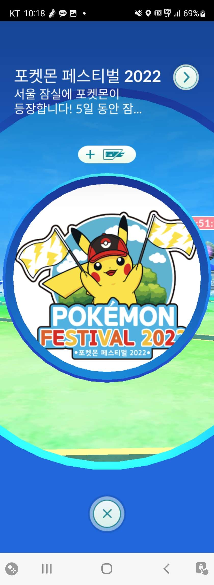

포켓스탑과 체육관은 포켓몬고 게임 내에서 중요한 역할을 합니다.

몬스터볼과 같은 아이템 수급,
레이드 배틀 진행, 체육관 방어를 통한 포켓코인 수급 등
게임 플레이에 있어서 도움이 되는 존재이죠.
스탑,체육관을 생성하는 방법과 주의사항을
알아보는 시간을 가져 보도록 하겠습니다.
어려운 내용이기 때문에 처음 보시는 분들은 이해가 안될 수 있습니다.
**주의사항**
포켓스탑 신청 자격:
트레이너 레벨 37 이상
하루 최대 40개의 후보 신청 가능